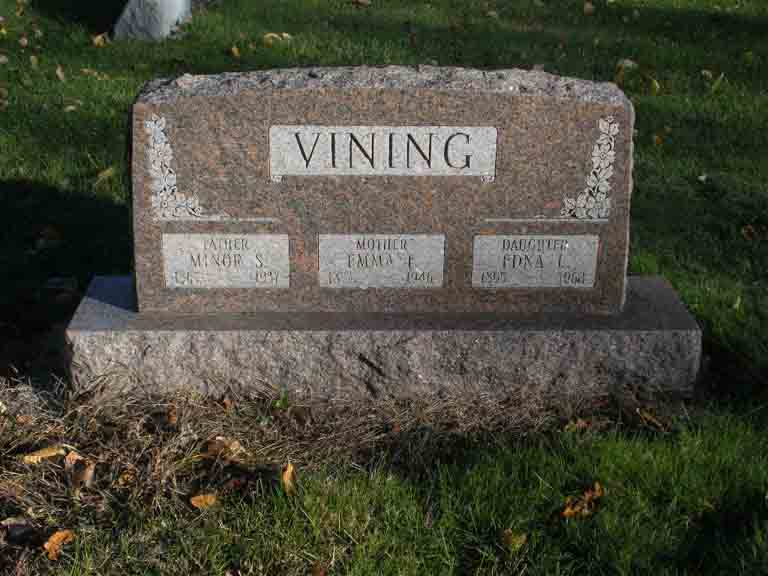

Documentation for Minor Simon/Simeon Vining - Emma F. Dillingham
Death Data
Headstone for Minor Simon/Simeon Vining, Emma F. (Dillingham) Vining, and daughter Edna L. Vining, in IOOF Cemetery, Bourbon, Marshall County, Indiana (from Find A Grave):
